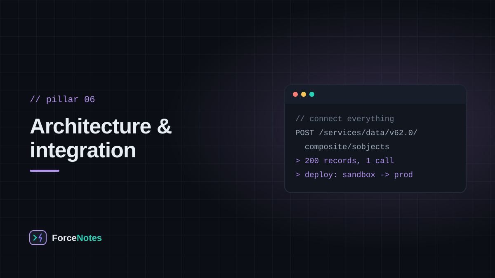
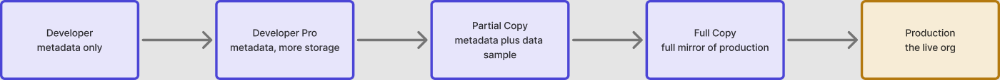

Salesforce rarely lives alone. It syncs with an ERP, feeds a data warehouse, gets loaded from spreadsheets, and moves through a chain of sandboxes on its way to production — and each of those is its own discipline.

Salesforce exposes its data through both a REST API (lightweight, JSON-based, the default choice for modern web and mobile integrations) and a SOAP API (XML-based, older, still common in enterprise middleware that predates REST's dominance). For high-volume data movement, the Bulk API is built specifically for loading or extracting millions of records asynchronously, without burning through the same limits as ordinary API calls.
Data Loader is Salesforce's own desktop tool for bulk insert, update, upsert, and delete operations against any object, driven from a CSV file. For recurring, scheduled, or more complex data movement, it's more common to reach for a dedicated ETL (extract-transform-load) tool that connects to the Bulk API on a schedule.
Moving configuration from a sandbox to production is called a deployment, and it can happen two ways:
Production is never edited directly. Work happens in sandboxes — copies of an org used for building and testing — which come in a few sizes: Developer and Developer Pro (no production data, for building), Partial Copy (a sample of production data, for testing), and Full Copy (a complete mirror, for final staging). A healthy release process moves changes through this chain in order, never straight from a laptop to production.
